class: center, middle # Cloud study group - AWS Lambda --- # Agenda - Plagure-slides-ing - Demo - cloud cron --- <a href="https://www.slideshare.net/AmazonWebServices/deep-dive-on-aws-lambda">(source)</a>deep-dive-on-aws-lambda/01 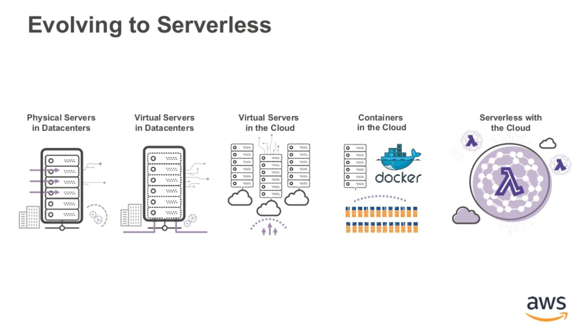 --- <a href="https://www.slideshare.net/AmazonWebServices/deep-dive-on-aws-lambda">(source)</a>deep-dive-on-aws-lambda/02 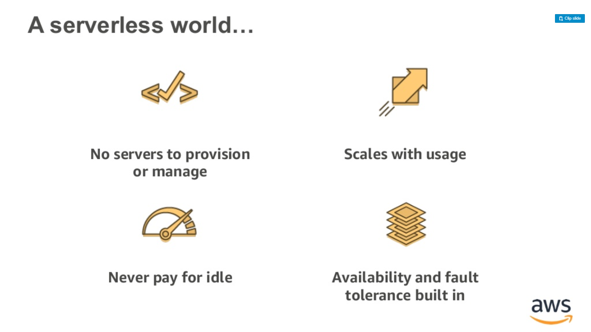 --- <a href="https://www.slideshare.net/AmazonWebServices/intro-to-aws-lambda-london-loft">(source)</a>intro-to-aws-lambda-london-loft/01 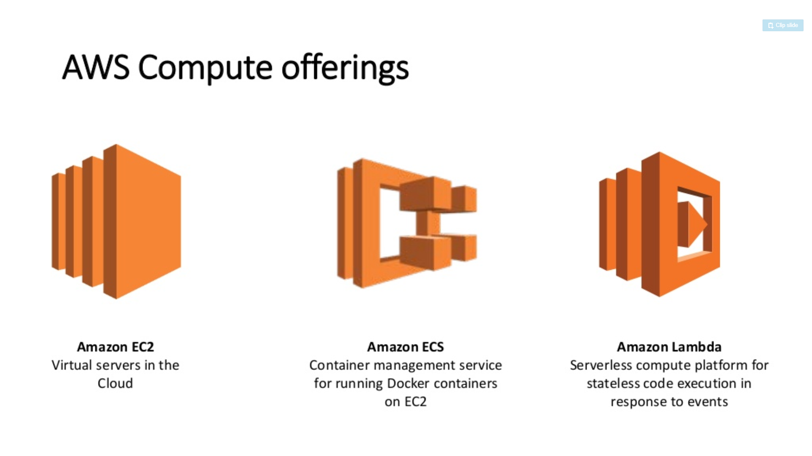 --- <a href="https://www.slideshare.net/AmazonWebServices/deep-dive-on-aws-lambda">(source)</a>deep-dive-on-aws-lambda/05 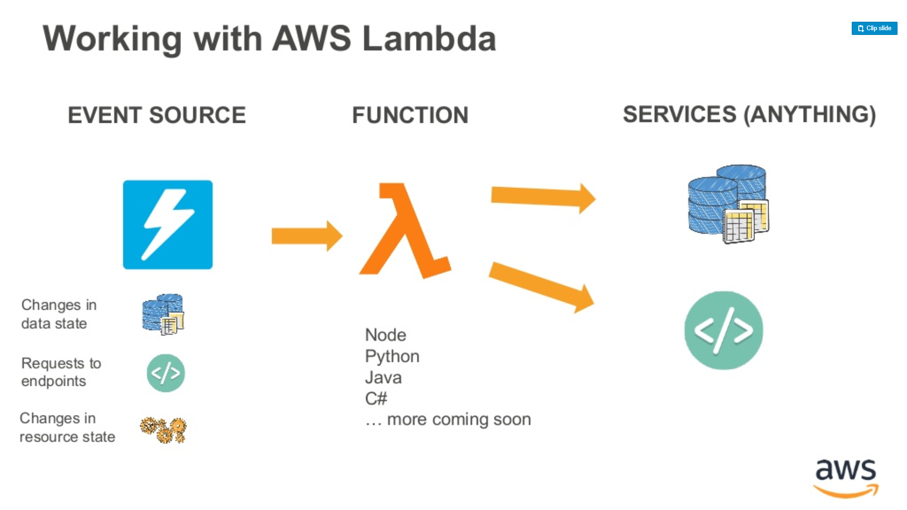 --- <a href="https://www.slideshare.net/AmazonWebServices/deep-dive-on-aws-lambda">(source)</a>deep-dive-on-aws-lambda/06 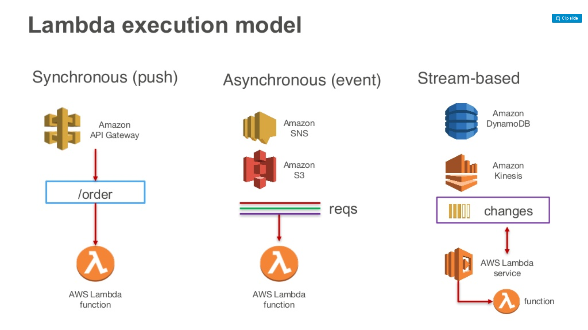 --- <a href="https://www.slideshare.net/scottleber/aws-lambda-73153540">(source)</a>aws-lambda-73153540/01 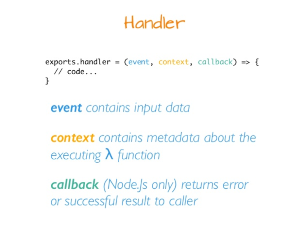 --- <a href="https://www.slideshare.net/scottleber/aws-lambda-73153540">(source)</a>aws-lambda-73153540/02 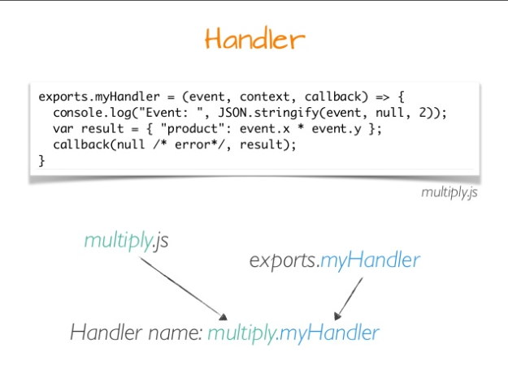 --- <a href="https://www.slideshare.net/scottleber/aws-lambda-73153540">(source)</a>aws-lambda-73153540/03 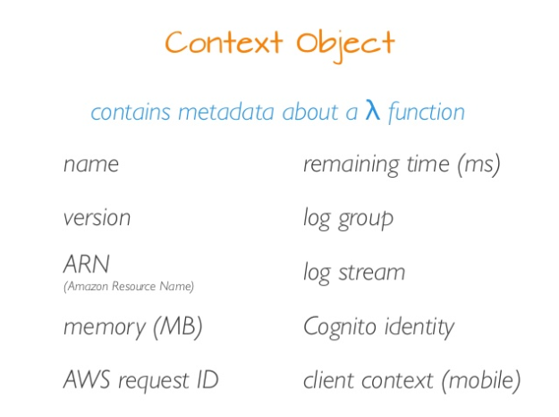 --- <a href="https://www.slideshare.net/scottleber/aws-lambda-73153540">(source)</a>aws-lambda-73153540/05 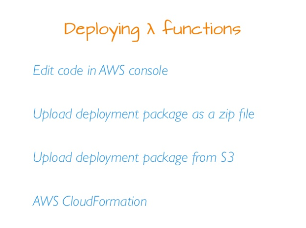 --- <a href="https://www.slideshare.net/scottleber/aws-lambda-73153540">(source)</a>aws-lambda-73153540/06 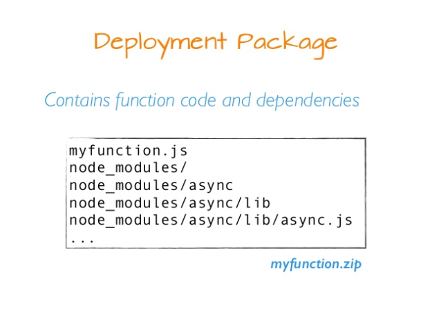 --- <a href="https://www.slideshare.net/scottleber/aws-lambda-73153540">(source)</a>aws-lambda-73153540/04 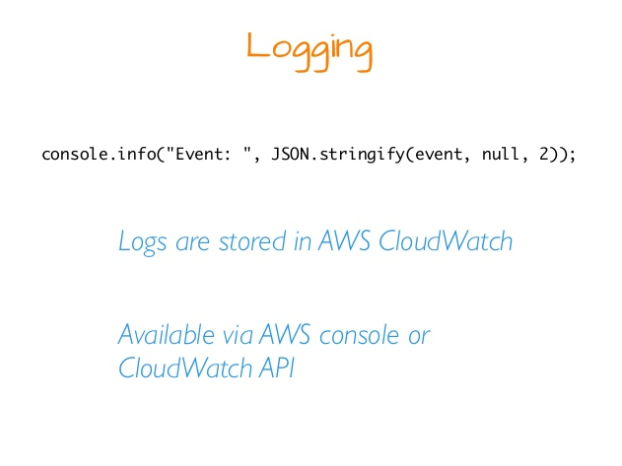 --- <a href="https://www.slideshare.net/scottleber/aws-lambda-73153540">(source)</a>aws-lambda-73153540/07 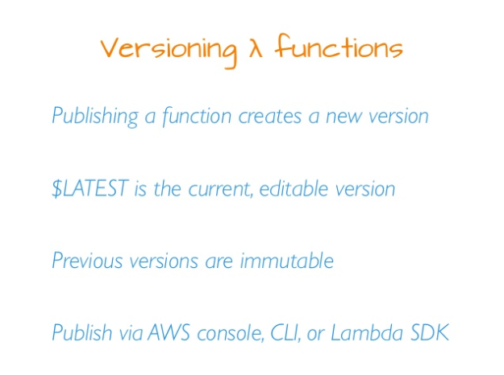 --- <a href="https://www.slideshare.net/AmazonWebServices/deep-dive-on-aws-lambda">(source)</a>deep-dive-on-aws-lambda/09 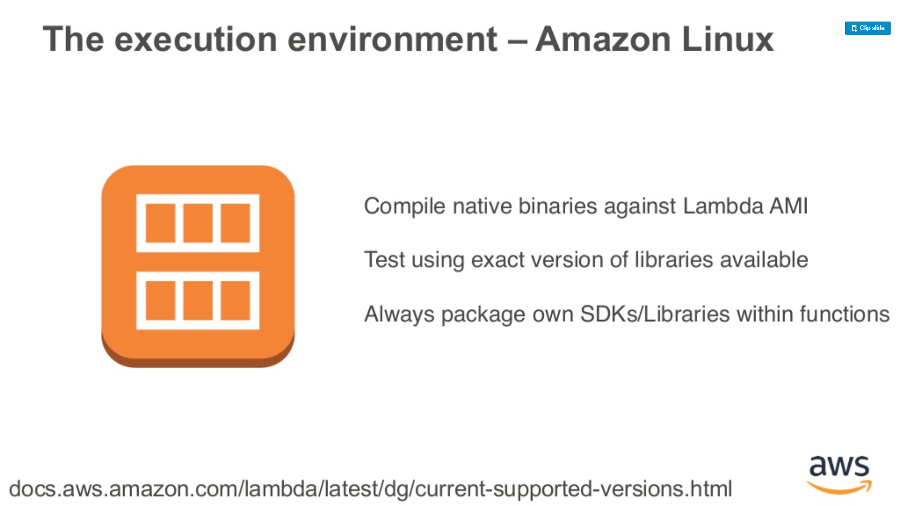 --- <a href="https://www.slideshare.net/AmazonWebServices/deep-dive-on-aws-lambda">(source)</a>deep-dive-on-aws-lambda/10 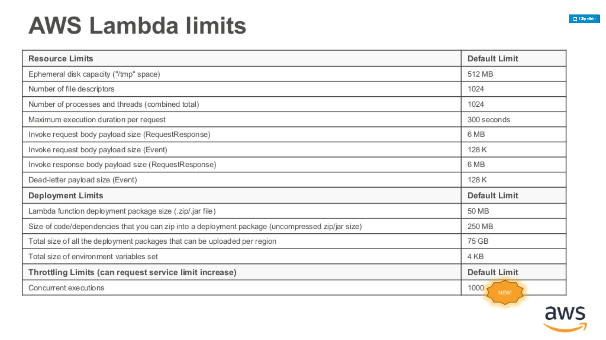 --- # Lambda CI/CD Lambda requires fresh thought on deployment. can be deployed: - aws console - `lambda UpdateFunction` from machine with AWSSDK / aws-cli - Deploy from S3 with AWSSDK / aws-cli / infrastructure tool ### Deploy from S3 - CI/CD - build artifact (.zip file) - upload file to S3 - run `lambda UpdateFunction` from environment --- <a href="https://www.slideshare.net/AmazonWebServices/deep-dive-on-aws-lambda">(source)</a>deep-dive-on-aws-lambda/07 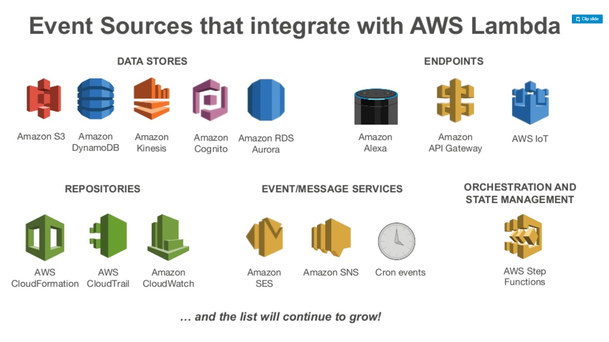 --- <a href="https://www.slideshare.net/AmazonWebServices/deep-dive-on-aws-lambda">(source)</a>deep-dive-on-aws-lambda/11 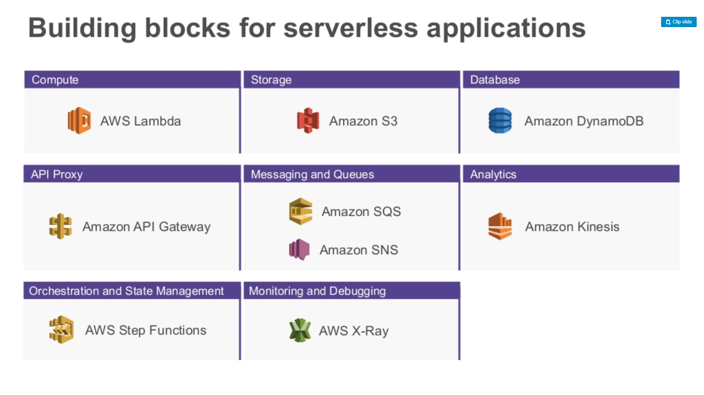 --- <a href="https://www.slideshare.net/AmazonWebServices/deep-dive-on-aws-lambda">(source)</a>deep-dive-on-aws-lambda/03 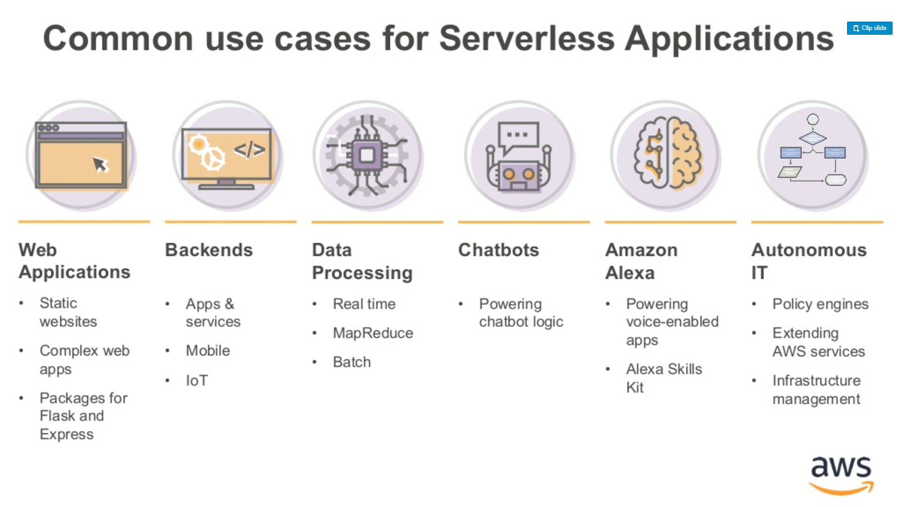 --- ### Aside - terraform <a href="https://www.slideshare.net/leetrout/terraform-an-overview-introduction">(source)</a> 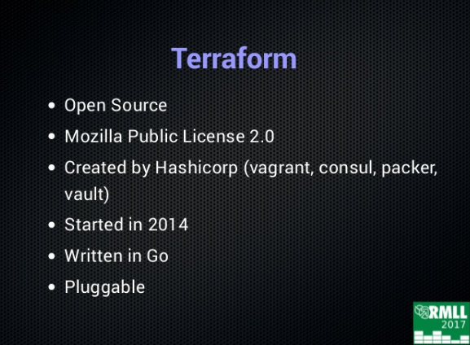 --- <a href="https://www.slideshare.net/roidelapluie/an-introduction-to-terraform">(source)</a> 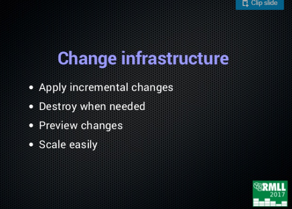 --- <a href="https://www.slideshare.net/roidelapluie/an-introduction-to-terraform">(source)</a> 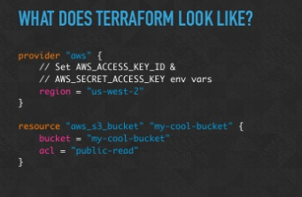 --- ### Demo Event -> Lambda -> S3 Setup a cloud 'cron' job to write to s3 every minute Need - S3 bucket (for deploying lambda) - Cloudwatch Event - Lambda function - python code in zip file - S3 bucket (to write to, use the same) - Permissions for above (invocation and access) --- ### The end Any questions?